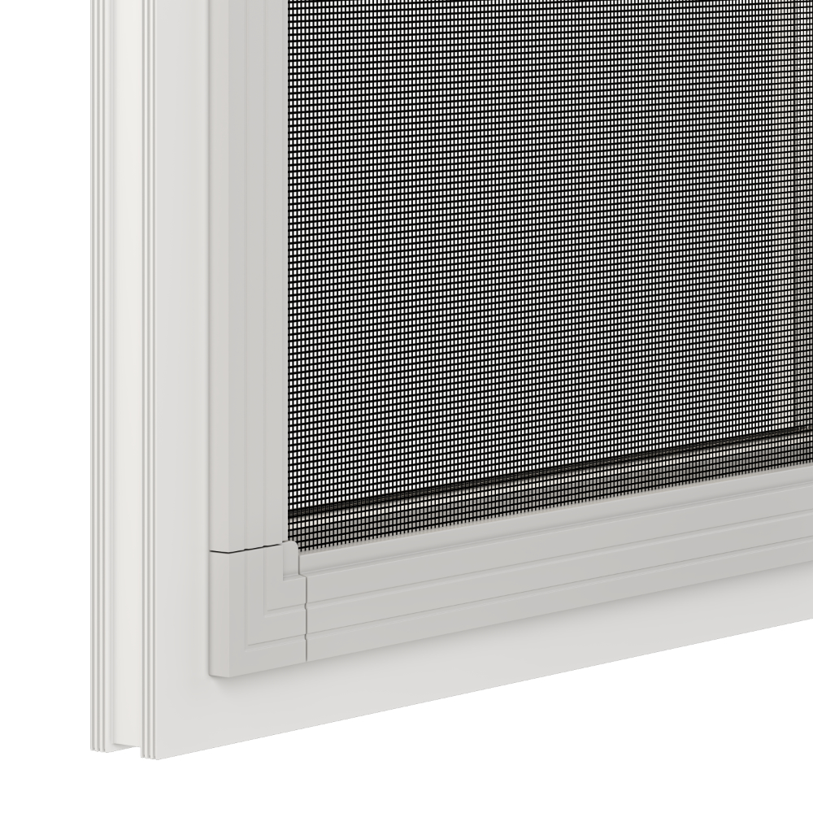
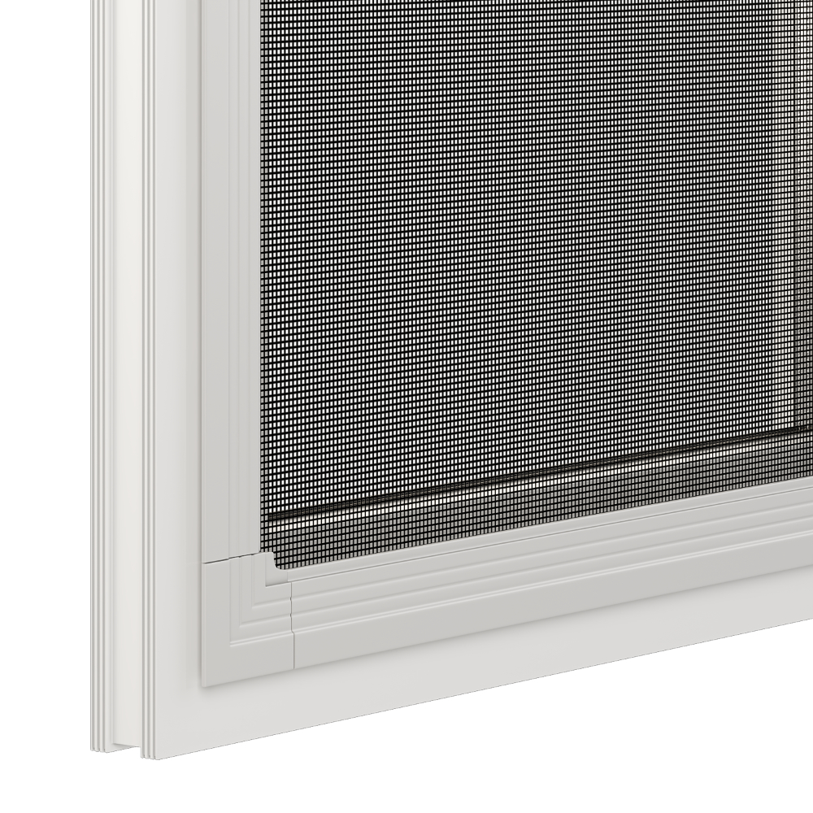
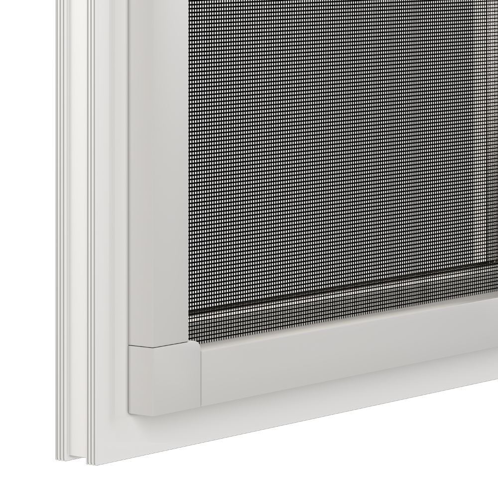
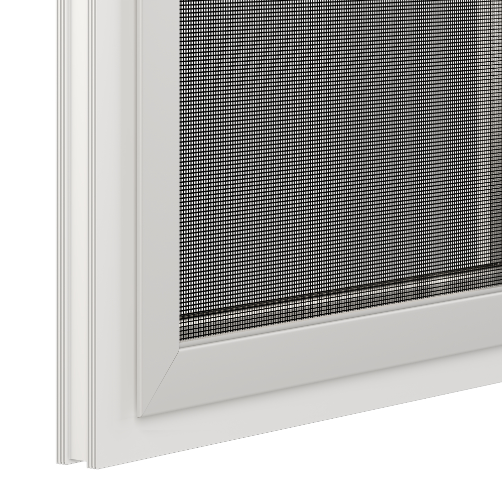
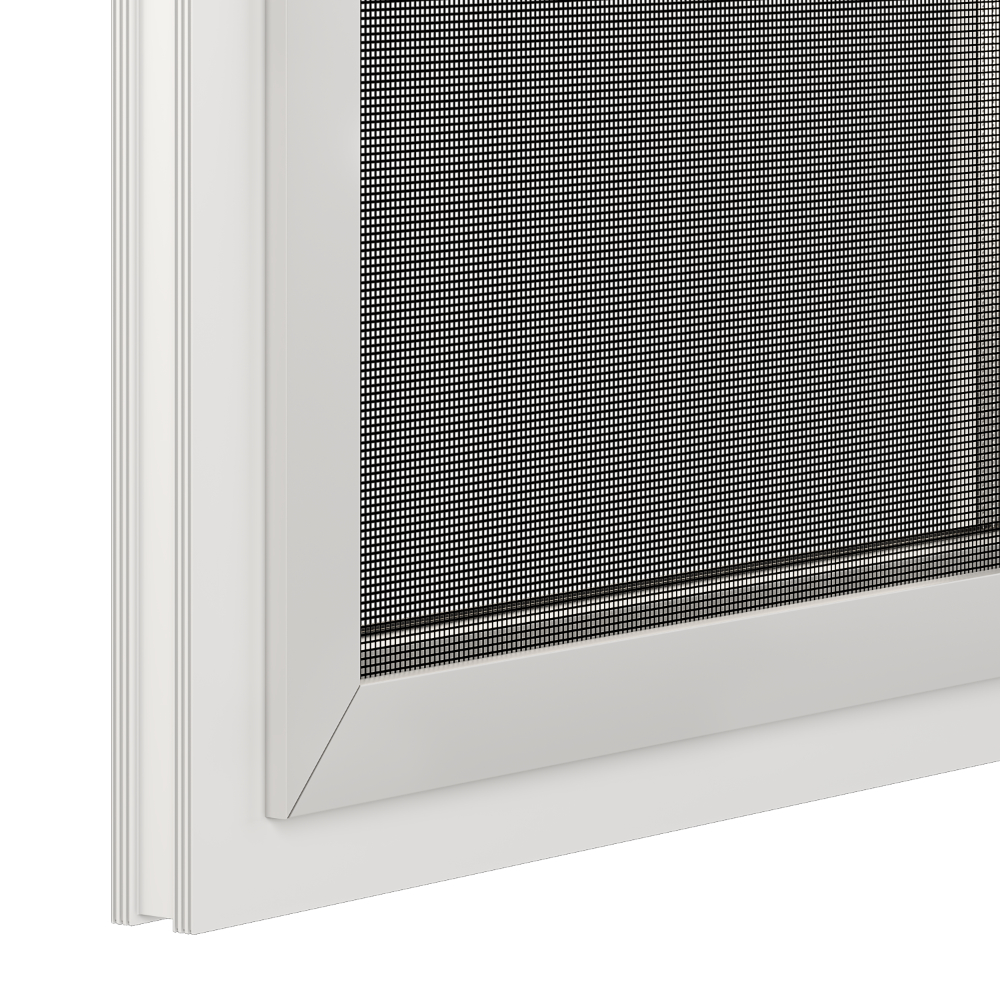

Pevné okenní sítě z kvalitních hliníkových profilů přesně na míru. Jednoduché sejmutí pro čištění nebo zimní uskladnění. Volitelně s nanovlákennou membránou (protipylová síťovina).

Válcované hliníkové profily. Uchycení PVC obrtlíkem nebo „Z" držákem. Vnitřní i vnější rohy, možnost šikminy. Max. 1 300 × 1 700 mm.

Válcované profily, uchycení PVC obrtlíkem nebo otočným držákem. Vnitřní i vnější rohy, možnost šikminy. Max. 1 500 × 1 800 mm.

Extrudované profily, PVC obrtlík. Možnost lakování dle RAL nebo renolitová fólie. Max. 1 800 × 1 800 mm.

Extrudované profily, otočný držák. Možnost lakování dle RAL. Max. 1 800 × 1 800 mm.

Pro hliníková okna, „Z" držák. Možnost lakování dle RAL. Max. 1 800 × 1 800 mm.
Barvy, vzorník látek a technické parametry všech modelů najdete na hlavní stránce nebo vám je ukážu při zaměření.
Cena se odvíjí od rozměru okna nebo dveří, zvoleného modelu a barvy či látky. Přesnou cenu dostanete v nezávazné nabídce po bezplatném zaměření.
Zaměření i montáž v okolí do zhruba 70 km od Jindřichova Hradce – jižní Čechy a část Vysočiny.
Chcete pevné okenní sítě rámové na míru? Domluvíme zaměření zdarma.
Zavolejte na +420 606 643 865, napište na info@bidsolution.cz nebo vyplňte poptávkový formulář. Ozvu se do 24 hodin.